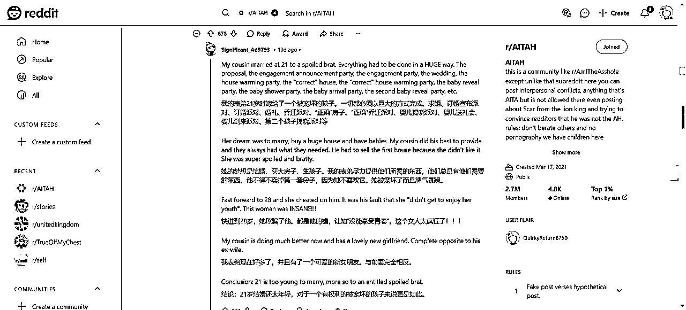
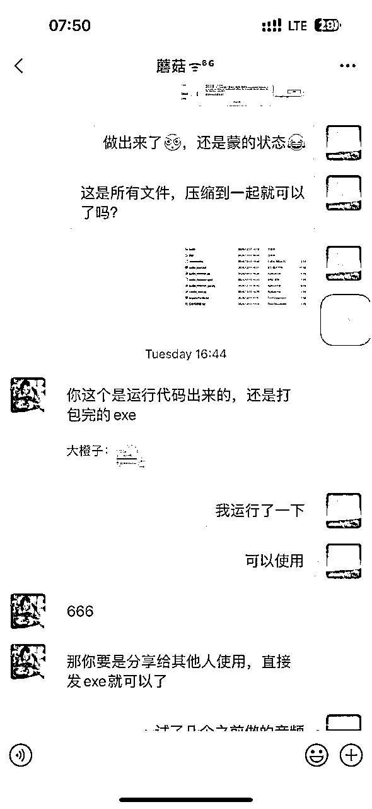

来源：https://kxy86l48lex.feishu.cn/docx/ClbidZ9Gno3rU8xv60qck4I5nRe
大家好，
我是大橙子，今年刚加入生财几个月，带着好奇和渴望，踏上了12月的航海之旅。
这是我第一次在生财有术的大家庭中分享我的航海经历，也算是我成长的见证吧。
作为一个刚踏上航海之旅的新手，12月航海我勇敢地报名了两个赛道：YouTube Shorts和Cursor，两个都是我的新挑战，纯新手级别，当时我的航海梦是被钱塘江鲤大佬的帖子点燃的，心想：如果cursor能自动制作YouTube Shorts，那不是美滋滋一件好事？
可是当航海开船不久，双赛道的挑战很快就给我来个下马威——
这边刚学怎么剪辑视频，那边又得埋头写cursor代码， 感觉自己像是在厨房里同时炒两道大菜，手忙脚乱，焦头烂额，时间管理成了我的新难题，每天在视频剪辑和代码编写之间切换，上班之余，我还得挤出时间来学习，日常的时间管理变得异常困难，明显感觉时间不够而且学习吃力~~
另一方面在群里看到队友晒出的成绩单、领队和志愿者们的鼓励，我遇到的下马威不正是让我去体验生财航海实战的魅力?我想去挑战一下，挑战越大，我成长的空间就越大。
在这些项目上，虽然我步履蹒跚，但我希望自己的每一步都坚实有力。
看到群里领队和教练们的激励，群里队友们相互的答疑交流，我相信在这样的氛围中只要我坚持下去，早晚能找到自己的航海节奏，让这双赛道的挑战，变成我成长的催化剂。
在YouTube Shorts的赛道上，我有幸遇到了老马教练，开营后的第一场高手领航，让我眼前一亮，他的领航不仅仅是理论上的讲解，更多的是实操的演示。
从如何挑选吸引人的选题，到如何剪辑出精彩的视频，老马教练的指导细致入微，就像是已经把美味的饭菜摆在你面前，把饭已经喂到嘴边，就差那么一点点，替你吃了~~
这里附上老马教练精华帖：详细拆解YouTube shorts 故事号类型https://scys.com/articleDetail/xq_topic/5121428151148424
老马教练高手领航实操视频：https://shengcaiyoushu01.feishu.cn/minutes/obcnhr1ek27iatgpyrjp2985?from=from_copylink
在老马教练的视频和航海手册的加持下，我满怀信心地踏上了YouTube Shorts的实操之旅，看教练操作的时候总是轻车熟路充满惊喜，等自己真正实操了，过程中的遇到的挑战比预期的要多得多，经常遇到很多意想不到的卡点
因为之前对整个youtube的生态系统知之甚少，没有太多了解，教练提到的各种网站对我来说有时候就像是迷宫，都不会操作，每一个新打开的网站都让我感到迷茫，一些网站都是第一次打开，根本找不到里面的东西在哪，我花了整整两天时间，才把第一条视频的素材、音频、文案这些准备工作做到位~
正是这些意想不到的卡点，让我的航海实战更有信心，完成了每一次的挑战，每一次的困惑，都让我对YouTube Shorts有了更深的理解和掌握。
分享一下我是如何一步步把第一条成品视频做出来的：
第一步：找素材
最开始用了老马教练的对标素材库账号 ，每一个对标都关注了一遍，然后在ins上开始刷视频，感觉可以被当成素材的就关注
敲个黑板
尽量找没有人物出镜也没有字幕的视频，方便后期剪辑
这里多注意有些视频中间是会有小字幕的，看到素材之后进主页查看一下别的视频可不可以使用，
都可以的话果断关注备用，一个一分左右的视频大概需要5个左右的素材就够了
第二步：在reddit上找文案
老马教练同样给了第一批可以使用的文案素材链接
文案素材链接
https://www.reddit.com/r/BestofRecdates
https://www.reddit.com/r/AITAH/
https://www.reddit.com/r/AmItheAsshole
https://www.reddit.com/r/TrueOffMyChest
https://www.reddit.com/r/selfhttps://www.reddit.com/r/nosleep/
全部加入后开始查看哪个文案可以改写，这里可以找一些能引发情绪共鸣的文案，或者是搞笑类的，总之是能给看到的人带来情绪价值的，这里也要注意评论区，有时候文章下面的评论区也可能有一篇不错的文章

第三步：文案改写
把找到的直接用claude改写，提示词就用老马教练给的就好了，老马教练已经自己训练了很多次，我自己使用感觉改写的很好，基本不用怎么修改了。
提示词：我需要你帮我改写原文故事，改写规则:[字数控制:新文案字数≤原文字数x1.1]+[结构:精华开篇+细节递进+转折+点题]+「保留:人称关系、核心事件]+[替换:每段最多2个关键词重复，用新鲜比喻和动作描写代替常见表达】+[语言:简练句式，清晰主干]
1.明确的字数限制
2.必要的改写架构
3.核心保留要素
4.替换原则
5.语言要求
确保改写既保持故事精髓，又避免冗长。
以下是原文，请给我改写后中英文对照:
第四步：文案转音
IIElevenLabs:https://elevenlabs.io/新注册的账号有1万额度，可以先拿来练手，后面额度不够果断淘宝
这里男生我用的是Adam，女生是Natasha - Valley girl
第五步：在figma制作一张标题
用教练给的模板直接修改里面内容就好了https://www.figma.com/community
第六步：找背景音乐
YouTube对标账号用的什么音乐直接下载就好，这里注意使用音乐时不要超过1分钟，要不然有可能会侵权
以上步骤都做完一条视频需要的所有东西都有了，剩下就是视频剪辑部分，具体剪辑在YouTube shorts航海高手领航里有老马教练特别详细的操作，我就不过多描述了。
航海期间，跟着高手领航，我反复的观看回播，跟着教练一步步的脚踏实地地学习动手实操，终于在我的努力下真的把第一条视频做出来了
那一刻，我深刻体会到了有人带领的幸福感。如果让我自己摸索着去做这个项目，可能真的要到猴年马月才能有所成就，经历踩各种的坑。有了高手领航教练的指导，就像是在迷雾中找到了灯塔，照亮了我前进的道路。
可乐领队经常在群里说的一句话：听话照做，惊喜不断！在我这里得到了验证，我按照教练的指导，一步步来，不急不躁，惊喜就真的不断出现。
我成功做出了第一条视频，复盘时我发现剪辑中的某些环节简直是我的克星。每次坐在电脑前，面对那条蓝色的音频线，我都感觉自己像是在和时间赛跑。
因为第一次接触capcut剪辑工具，根本不会用，老马教练的故事号视频需要制作一条大概1分钟左右的朗读音频，这里面会有各种停顿的地方，需要把这些停顿都删除掉，在剪辑里面也叫切气口，一条1分钟的音频大概有27个左右需要剪掉的部分，剪掉之后还要对齐音频~
刚开始的时候我每天在这一步大概花费将近1到2个小时的时间，在连续做了4天的挣扎之后我几乎要崩溃了
就想抓狂，一看到那条蓝色音频线，我的心情就像看到老板的脸色一样，紧张又无奈。
7群里的气氛很活跃，教练们的耐心答疑，船员们的互助，我不想放弃，在航海交流群里征求了大家的意见 ，我尝试了软件里的智能剪口播和识别字幕的方法，但系统总是识别不到，心里急得就像热锅上的蚂蚁。
不能就这么被打败，于是我开始寻找解决方案，想去尝试有什么解决方法~
与此同时，我也在学习Cursor的知识，一步步跟随手册，从俄罗斯方块到上线网页。
本身小白，一条代码不会，一直是按照手册顺序是制作的，在按照航海手册制作一个恋爱网站时。无意中看到了手册最后一个，蘑菇教练写的cursor自动剪辑视频
下意识的感觉这个应该对我有用，说不定能解决我的剪辑难题，我直接按照手册里的步骤，操作不到半小时，报了4次错误，最终第一版的自动剪辑视频的工具真的诞生了，它可以自动抓取图片和音乐，剪辑成一条视频。
这让我在感叹软件强大的同时，也萌生了一个大胆的想法：如果视频都能自动剪辑，那音频剪辑气口是不是也可以自动化呢？
想法在我心中生根发芽，于是马上开始行动，
首先给cursor提示词：
请帮我实现用python音频剪气口（静音部分剪除）的功能，要求如下
1、读取目录/F:/Youtube（素材）/音频 下面的文件，按顺序每次读取1个文件,并生成一个音频文件
2、能够通过用户设置音量阈值（如 -40 dB 以下），检测并剪除无声音部分。
3、将处理后的音频重新合成
然后cursor会自动生成所需要的代码
后面报了几次错误：
首先是系统环境变量问题，安装FFmpeg
按照cursor的提示一步步操作，遇到不懂的地方直接问cursor，他会直接给你答案以及操作步骤
前面环境变量问题解决之后就一直报错说我自己的Python版本太高，我按照提示开始降Python版本
在尝试了4-5次报错之后，在这期间，只要是报错我就直接把错误代码发给cursor，它马上就给我回复哪里有问题，然后就直接修改完成或者指导我之后怎么一步步的运行，这前后大概用了半个小时，真的就做出来了
马上试了一下效果，原来用2个小时剪辑一条音频，现在2分钟可以出N条，效果和自己剪辑的基本没有区别，直接把我制作视频的效率提高了N倍
不得不感叹现在的AI软件是真的好用，让我这种一条代码都不会的人，跟着cursor一步步做下来居然真的可以做出给自己提效的工具。
但是这个工具只能在cursor里面运行，跟教练不断地沟通，在蘑菇教练的帮助下，又进一步做出来了一个可以给任何人使用的exe文件，成功制作了自动剪辑音频的工具，极大地提升了我的工作效率。

这里特别感谢蘑菇教练，是我在YouTube shorts航海里的志愿者，也是cursor里的教练，还是写了那篇批量剪辑视频文章的作者，真的很幸运能遇到🙏🏻
在参加航海实战中的这段时间里，我经历了从迷茫到清晰的心路历程。现在想想，除了运气以外我做对了几件事：
听话照做，先动起来，不行动真的不知道自己会在哪个地方有卡点，哪里有问题
行动起来了就是是打破迷茫的关键。完成比完美更重要，参加航海实战跟着航海手册、高手领航或者生财星球贴的文章，找到目标先完成，一旦第一步迈出，后续的迭代就会快很多，人往往迈出第一步是最难的
航海中我也学会了在遇到问题时先自己寻找答案，而不是立即寻求帮助
一上来就问，每一次都是教练上来就给你答案的话，自己怎么也学不会，怎么能做到举一反三呢？
实在是自己解决不了了再去问，这个时候得到的答案往往记忆深刻，对于之后的学习帮助也越大
参加航海实战中，我收获的不仅仅是知识和技能，更珍贵的是结识了志同道合的伙伴们。乘风破浪，共同成长，这份经历，比任何宝藏都要珍贵~~
感谢老马教练、蘑菇教练、马可乐领队，用他们的智慧和经验照亮了我前行的道路。同时我也要向其他所有的教练、领队、志愿者们，以及每一位并肩作战的队友们，表达最诚挚的感谢！！!
生财有术星球不仅是一个学习的平台，更是一个让我们找到归属感的大家庭。在这里大家相互支持，共同进步。航海实战中每一位的陪伴和帮助，都是我们成长路上不可或缺的力量。在这里，我不仅提升了自己的技能，更收获感受了团队的力量，我要对每一位在航海中给予我帮助和启发的圈友们说一声谢谢。感谢你们，让我的航海之旅如此丰富多彩，如此难忘！
记得开营的时候坤汀说的
快速试错、保护热情、不怕丢脸、下场做把手弄脏
这一次的航海实战我真实去感受和践行了
航海中每一步的坚持，每一次的尝试，都是我的成长见证。
航海即将结束，回望开营时大家立下的flag，你们有达成初始的目标吗？
其实我做的视频并不好，没有做出爆款，用cursor我也不懂编程，报错根本看不懂，制作的这个工具也很简单，如果别人去做的话，可能用不上10分钟也能做出一个剪辑工具
之所以有勇气分享，是想说，如果像我这样连电脑都不太懂的人都能做出来，那么圈友们只会做的更好，飞的更高！不要害怕未知，不要畏惧挑战。在这里你将学到知识、技能，还有一群会为你加油鼓劲的伙伴。
第一次分享，希望我的经历能对新加入生财的朋友们有所帮助，如果有启发谢谢你给我点赞，让我更加冲劲加倍！
一起生财有术，扬帆起航，共创辉煌
最后附上工具链接:
链接: https://pan.baidu.com/s/1BxgGmOqx6P_hEx14kkhcqA?pwd=e2vy
提取码: e2vy